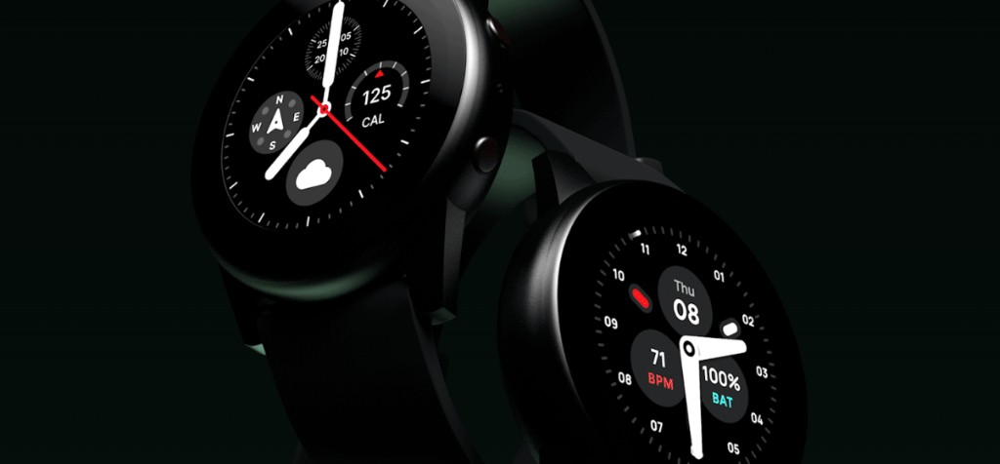

From design to production code in P4 DAM
I designed and built features for a digital asset management product using Claude Code, helping a smaller development team ship around 25% more features.
I lead design on P4 DAM and P4 Plan at Perforce, the tools game studios, semiconductor designers and aerospace contractors use to manage their assets and plan their projects. I ship production code myself, with Claude Code.
I designed and built features for a digital asset management product using Claude Code, helping a smaller development team ship around 25% more features.

I led user research and redesigned a low-code workflow builder so people could understand errors, inspect their data and fix failed steps.

I researched how visitors used CityFibre’s website, redesigned its availability-check journey and applied the new brand across the website and business portal.

A closer look at interfaces I’ve designed and shipped, including workflow branches, role permissions, calculations and asset navigation.

Watch faces designed for quick reading, plus reusable mockups and assets for other designers.

Contributed testing, AI upscaling and launch support to masterleafcnc’s fan remaster. Built and tested a balance patch for competitive multiplayer.